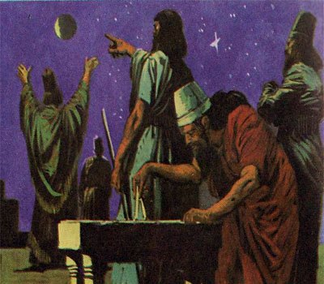

Напевно всі ми чули біблійну історію про знамениту та так та недобудовану Вавилонську башту, внаслідок чого відбулося змішання людських мов, так зване «вавилонське стовпотворіння»
Зрозуміло, виглядає все це як красива легенда, але, тим не менш, згадана в Біблії Вавилонська башта дійсно будувалася за царя Навуходоносора ІІ, а саме місто Вавилон був воістину перлиною стародавнього світу. «Батько історії» Геродот, який відвідав Вавилон був захоплений його величчю і розмірами, до нас дійшли його описи цього великого міста, яке цілком можна назвати мегаполісом стародавнього світу.
Де знаходиться Вавилон
Але перш ніж відправитися у минуле, давайте визначимося з географією нашої віртуальної мандрівки і відповімо на питання: «де знаходився Вавилон на карті». Отже, Вавилон знаходиться, а точніше знаходився на території сучасного Іраку, трохи північніше від іракського міста Ель-Хіла, зараз на його місці залишилися одні лише руїни, ну і туристичні кіоски з сувенірами.
Ось на цьому місці колись і було найбільше місто давнини – Вавилон. Але в епоху свого розквіту Вавилон був не тільки містом, а й державою, яка володіла великими територіями
Історія Вавилону
Історія Вавилонського царства являє собою цілу низку драматичних злетів і падінь, повстань і завоювань, самі древні вавилоняни не раз були, як у ролі завойовників, так і завойованих.
Почалося все приблизно у ХХ столітті до нашої ери, згідно легенди, засновником легендарного міста був не менш легендарний цар Німрод, правнук самого Ноя. Він же почав будівництво тієї самої Вавилонської вежі, добудовою якою займався вже набагато пізніше інший великий вавилонський цар Навуходоносор ІІ.
Дуже скоро Вавилон піднявся над іншими містами Межиріччя і став столицею могутнього царства, що об’єднало усю нижню і значну частину верхньої Месопотамії. Цей період характеризується розквітом міської культури, літератури, мистецтва, юриспруденції (так, в цей час був створений знаменитий кодекс законів вавилонського царя Хаммурапі, найбільший юридичний пам’ятник законів давнини).
В 1595 році до н. е. Месопотамію завойовують войовничі кочівники хети, які захоплюють владу над Вавилоном. І замість того, щоб зруйнувати вже розвинену до того часу вавилонську цивілізацію кочівники в ній асимілюються, поступово переймаючи культурні традиції вавилонян. Їхнє правління у відносному мирі тривало понад 400 років, поки на арену історії не вийшла нова могутня, і до того ж дуже войовнича держава древнього світу – Ассирія.
Ассірійці прославилися неймовірною жорстокістю до підкорених народів і поганою звичкою стирати з лиця землі цілі міста, але коли ними було завойовано вавилонське царство, його столицю, прекрасний Вавилон вони не чіпали, а навпаки, надали місту особливий статус, багато ассірійських царів навіть займалися відновленням його давніх храмів і будівництвом нових.
Але ось прийшла черга падіння ассірійського царства, яке трималося виключно на силі і страху підкорених народів. Але ніщо не може тривати вічно, і в один прекрасний момент почалося загальне повстання проти ассірійського панування, яке очолив майбутній вавилонський цар Набопаласар. Повстання увінчалося успіхом, колись грізна Ассирія впала, і з її падінням почався новий період розквіту Вавилонії. Вершини своєї могутності Вавилон досяг під час правління сина Набопаласара, дуже діяльного та енергійного царя Навуходоносора ІІ.
Навуходоносор проводив активну зовнішню завойовницьку політику, зокрема під час його правління була завойована Юдея, а самі євреї були насильно переселені в Вавилонію. Цей період їх історії, відомий як «Вавилонський полон» яскраво описаний у Біблії.
Крім Юдеї були остаточно завойовані Сирія та Палестина. Саме місто Вавилон був значно перебудоване, воно ще більше збільшилося в розмірах, ставши найбільшим культурним, торговельним, економічним центром у тогочасному світі. Про нього з захопленням писали сучасники.
Падіння Вавилона
Але як це зазвичай буває, розквіт часто призводить до гордині, і як розповідає біблійна історія, гордий вавилонський цар вирішив, що зможе побудувати вежу до небес і таким чином стати рівним Богу (до речі Навуходоносор дійсно намагався побудувати саму високу на той час вежу), але розгніваний Бог покарав цю зарозумілість, змішавши мови будівельників, внаслідок чого всі будівельний роботи довелося припинити. В реальності ж падіння Вавилона і його знаменитої вежі, яка представляла собою язичницький храм, присвячений вавилонському богу Мардуку, було поступовим протягом століть.
Нова загроза Вавилону прийшла зі сходу, де розпочалося повстання проти персів Мідії, але вийшло так, що перси увійшли у смак, і крім Мідії успішно підкорили і Вавилонське царство. Сам Вавилон тепер став перлиною перської імперії.
Олександр Македонський, який успішно наваляв вже персам, всерйоз збирався зробити Вавилон столицею своєї великої імперії, але раптово помер, його спадкоємці пересварилися між собою, а сам Вавилон поступово опинився на узбіччі історії.
Архітектура Вавилона
Мабуть, найбільше вражала сучасників велична архітектура вавилонського царства. Зокрема тут знаходилося одне із семи чудес стародавнього світу – висячі сади Семіраміди.
Пальми, інжир, і багато інших дерева, розкішні сади були висаджені на штучних терасах. Насправді цариця Семіраміда до цих садів відношення не має, людський поголос це диво так назвав вже у пізніші часи, спочатку висячі сади були збудовані все тим же царем Навуходоносором для своєї дружини Нітокріс, яка страждала від спекотного клімату Месопотамії, оскільки була родом з лісистої місцевості.
Ще одним дивовижною архітектурною пам’яткою стародавнього Вавилону є парадні ворота Іштар, прикрашені мозаїкою синього кольору і барельєфами із зображенням сиррушей та биків.
Побудовані в 575 році до н. е. за наказом царя Навуходоносора, ці ворота, захищають північний вхід у місто, вони відмінно збереглися до нашого часу, були реконструйовані німецькими археологами і зараз їх можна побачити в берлінському музеї Пергамон.

Вулиці древнього Вавилона не розташовувалися хаотично, а будувалися згідно з чітким планом, одна частина вулиць йшла паралельно до річки, а інша частина перетинала їх під перпендикулярним прямим кутом. Будинки були зазвичай трьох і чотирьох поверховими, центральні вулиці були вимощені каменем.
У північній частині міста знаходився величний царський палац, збудований, так, знову Навуходоносором, а по іншу сторону головний храм міста, величезний зікурат присвячений верховному вавилонському богу Мардуку, та сама Вавилонська вежа з Біблії. За розповіддю Геродота на вершині цього храму-зікурата жила особлива жриця – «наречена бога Мардука» та згідно з переказами (принаймні, так вавилоняни розповіли Геродоту, а він передав нам), сам бог Мардук час від часу власною персоною відпочиває на вершині вежі.
Релігія Вавилону
Що ж, тепер саме час торкнуться давньої релігії Вавилону. Як ми вже знаємо, верховним богом у язичницькому пантеону вавилонян був Мардук, який згідно з вавилонською легендою про створення світу, переміг чудовисько хаосу Тіамат, тим самим внісши порядок в одвічний хаос і поклавши початок нашому світу. Саме цьому богові і присвячувалися численні храми та зікурати, але крім нього прості вавилоняни часто поклонялися і цілому ряду інших більш дрібних богів (частина з яких є іпостасями все того ж Мардука). Так, наприклад, жінки вавилонянки молилися жіночій богині кохання Іштар, яка представляла собою божественне втілення жіночого начала. Богині Іштар були присвячені і названі її іменем знамениті парадні ворота, про які ми писали трохи вище.
Також шанувалися боги Сонця і Місяця: Шамаш і Син, бог мудрості та рахунку Набу і багато інших менш відомих богів.
Вавилонські жерці, служителі богів, за сумісництвом були також і відмінними вченими стародавнього світу, а особливо вельми непоганими астрономами, так наприклад, саме вони першими побачили і зафіксували на зоряному небі планету Венеру, поетично названу «ранковою зорею» по часу її появи на небосхилі.
Культура Вавилона
Культура стародавнього Вавилона по мірі своєї просунутості могла зрівнятися лише з не менш розвиненою культурою стародавнього Єгипту. Так у Вавилоні була добре розвинена писемність, писали на глиняних табличках, і цьому мистецтву юні вавилоняни навчалися з ранніх років в спеціальних школах.
Вавилонські жерці рухали науку того часу, володіли мистецтвом лікування, відмінно розбиралися в математиці і особливо в геометрії. Автор знаменитої теореми свого імені, грек Піфагор у молодості навчався серед вавилонських жерців.
Вавилоняни були першокласними будівельниками, відмінними ремісниками, чиї вироби ходили по всьому древньому сходу.
В юриспруденції Вавилона панував знаменитий кодекс законів написаних царем Хаммурапі, що зробив великий вплив на правову культуру стародавнього Сходу. Закони там до слова були досить суворими. Як вам, наприклад, такий закон цього кодексу: якщо пивовар варив погане пиво (а у стародавньому Вавилоні вже варили пиво), то його слід було втопити в цьому самому поганому пиві власного виготовлення.
Досить цікаві деякі закони Хаммурапі з так званого «сімейного кодексу», наприклад один такий закон говорить, що у разі безпліддя дружини, чоловік має законне право зачати дитину від «блудниці», але в такому разі він зобов’язаний повністю її утримувати, але при цьому не приводити в будинок дружини за її життя.
Мистецтво Вавилону
Мистецтво стародавнього Вавилона активно представлено вже згаданої нами його чудовою архітектурою, барельєфами, скульптурою.